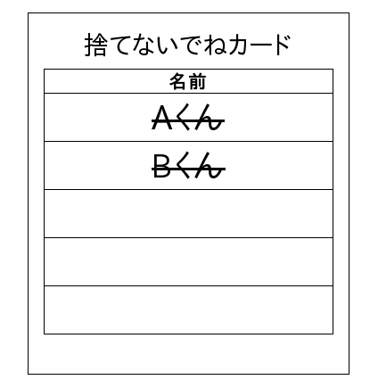
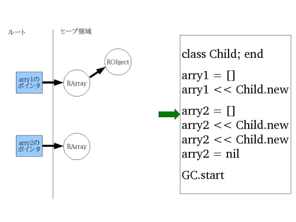
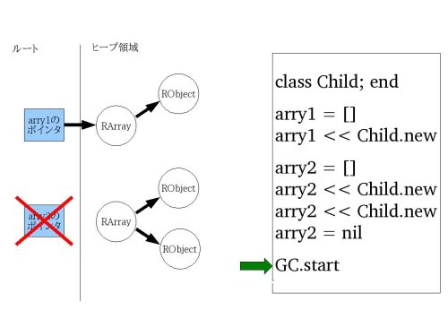

レアでアレなGCの話
書いた人: nari
はじめに
この記事では「 GC が便利って事は知ってるんだけど仕組みは知らないなぁ」という人たちに向けて、GC のアルゴリズムを分かりやすく解説します。
その後、実際に CRuby 1の GC がどういう風に動いているのかを説明します。
また、CRubyGC に対する最近の研究の動向にも少し触れようかと思います。
あ、先に断っておきますがこの記事は CG やゲームキューブとは関係ありません :-)
たまにはGCの話を
2008年12月に開催された九州Ruby会議01で「 GC に興味がある人はどの位いっらしゃいますか？」と壇上からアンケートを採った所、200人中3人しか手が上がりませんでした。（それでも無理矢理GCの話をしたわけですが・・）
どうやら、多くの人々にとって GC とは「勝手に裏でヨロシクやってくれてれば、それでいいんですよ」という存在のようです。
しかし、GC は多くの言語処理系に搭載され、当たり前の様に皆さんが使われている機能の一つです。 GC の仕組みや内部実装を知ることはプログラマにとって決して害ではありません。
｢息抜き程度に GC の話を聞いてあげようか。｣
という軽い気持ちでこの記事を読んでいただければ幸いです。
GC とは
GC とは「 GarbageCollection 」(ごみ集め)の略です。
GC が行うことは、メモリ内の不要になった領域を発見し、その領域を開放することです。
この事がプログラマに多大な恩恵を与える事を皆さんよくご存じだと思います。
ですので、ここではその事について大きく取り上げません。
GC が搭載された言語処理系
最近のほとんどの言語処理系はGCを搭載したものです。
例を数個挙げるならば
- Ruby
- Perl
- Java
- Haskell
- C#
- Gauche
の言語処理系にはすでに GC が搭載されています。
モダンな言語にとって GC は欠かせない機能と言えるのではないでしょうか。
GCのアルゴリズム
では、GC とはどのようにしてゴミを判別し、捨てているのでしょうか。
ここからは、その GC アルゴリズムをなるべく分かりやすく紹介したいと思います。
重要な3つのアルゴリズム
GC が初めて実装されたのは1960年代だそうです。 それから40年、多くの研究が行われ、そして多くのアルゴリズムが生み出されてきました。
しかし、世の中にある沢山の GC のアルゴリズムは元を辿ると基本的な3つのアルゴリズムに集約されてしまいます。
そのアルゴリズムとは
- Mark&Sweep
- Copying
- ReferenceCount
の3つです。
この3つは GC アルゴリズムの中でも基本中の基本です。
このアルゴリズムを理解することが、GC を理解する近道になるでしょう。
たとえ話のはじまり
とはいえ、GC のアルゴリズムの話をするにはマシンスタックやレジスタなど多くの専門知識を前提として知っておいて貰う必要があります。
しかし、そのような知識はこれらのアルゴリズムの本質ではありません。
そこで、本質だけを理解していただく為に、あるたとえ話を用意しました。
本の整理とGC
もう年は明けてしまいましたが、年末には家や会社の大掃除をされた方も多いかもしれません。
私も会社の年末大掃除をお手伝いする事になりました。
うちの会社には技術書がぎっしり詰まった本棚があります。 その本棚にはもう二度と開くことのないような古い雑誌や、RHGの様な良書が混同して置かれていました。
そこで私は「必要な本」と「不要な本」を分け、「不要な本」はゴミ箱に捨て、本棚を整理しようと考えました。
しかし、よく考えてみると「必要な本」と「不要な本」を区別する事は大変そうです。
なぜなら、本棚に置いてある本のすべてが会社のみんなで共有しているものであり、私個人の考えで「不要である」と判断する事はできないからです。 私がもう読まないだろうと思ったものでも、会社内の誰かにとっては「必要な本」かもしれません。
肝心な事は「会社内の誰もが不要だと思う本」を見つけることにあるようです。
さて、どのようにすればそれを見つけることができるでしょうか。
下の図は一応本棚を表しています。。

Mark&Sweep
ベタなアイデアですが、こういうのはどうでしょう。
本棚の本の一冊ずつに対して、会社の皆さんに「この本、来年も必要ですか？」と聞いて回る方法です。
具体的には以下の様な事をやります。
- 本棚の上左端から一冊本を取り出す。
- 同僚に「この本、来年も必要ですか？」と聞いて回る。
- もし誰かが「いるよ！」と答えたら、その本の背表紙に赤いシールを貼って戻す。
- 全員が「いらないなぁ」と答えたら、その本は何もせずに本棚に戻す。
- これを本棚の下右端まで繰り返す。
この手順を終えると本棚の本は以下の図の様に変化しました。

この手順では「必要な本」には赤いシールで印付けを、「不要な本」は何もせずにそのままにしています。 これで「必要な本」と「不要な本」を確実かつ完全に区別する事ができました。
この作業を「 Mark 」（印付け）と言います。
さて次は「不要な本」をゴミ箱に捨てる作業です。
これは以下の手順で行おうと思います。
- また本棚の上左端から一冊本を取り出す。
- もし、その本の背表紙に赤いシールが貼られていたら、それを剥がし本棚に戻す。
- 逆に何も印がなければゴミ箱に捨てる。
- これを本棚の下右端まで繰り返す。
この手順を終えると本棚の本は以下の図の様に変化しました。

この手順では「必要な本」を本棚に戻し、「不要な本」をゴミ箱に捨てました。 すると本棚には「必要な本」だけが残り、全ての「不要な本」を処分することができました。
この作業を「 Sweep 」（掃き出す）と言います。
そして、この方法を「 Mark&Sweep アルゴリズム」と呼びます。
日本語では「印付けをして箒で掃き出す」という意味です。とても良いネーミングですね。
悪い点
本棚はきれい整理されました。めでたしめでたし…
と、思いましたが、一つ問題があります。
それは本同士の隙間がスカスカに空いてしまった事です。
こうなってしまうと少し大きめの本は本棚にしまうことができなくなります。

この問題を「断片化」（フラグメンテーション）と呼びます。
これでは新しい本を入れるときに困ってしまいますね。何か違う方法を考えた方が良さそうです。
余談ですが我らが CRuby ではこの Mark&Sweep アルゴリズムが実装されており、この本棚と同じく断片化の問題があります2。
Copying
一つの本棚だけで整理するのは断片化などの様々な問題を起こしそうです。
なので、次は二つの本棚をうまく使って本の整理を行うことにしましょう。

具体的には以下の様な手順で行います。
- 本棚の上左端から一冊本を取り出す。
- 同僚に「この本、来年も必要ですか？」と聞いて回る。
- もし誰かが「いるよ！」と答えたら、その本の空の本棚に移す。
- 全員が「いらないなぁ」と答えたら、その本は何もせずに本棚に戻す。
- これを本棚の下右端まで繰り返す。
この手順を終えると本棚の本は以下の図の様に変化しました。

この手順では「必要な本」は右の本棚に移動、「不要な本」は何もせずにそのままにしました。
Mark&Sweep では印付けをする事で「不要な本」を区別しましたが、この方法は置き場所によってそれを区別します。
さて、次に「不要な本」をゴミ箱に捨てる作業です。
そうです。これはもう簡単ですね。
- 左の棚の本を全てゴミ箱に捨てる。
この手順を終えると本棚の本は以下の図の様に変化しました。

何も考えずに左の本棚の本をゴッソリとゴミ箱に捨ててしまいましょう。
この方法を｢ Copying アルゴリズム｣と呼びます。
ちなみに、次回本棚の整理をする際は、左の空の本棚に「必要な本」を移していく事になります。
良い点
Copyingの良い点はMark&Sweepよりも素早く整理できる点です。
Mark&Sweepでは｢不要な本｣を捨てる際に、一度本棚の本を全て調べる必要がありましたが、Copyingではその必要がありません。
また Copying では Mark&Sweep において課題であった断片化も起こっていません。
新しい本も入れやすそうですね。
悪い点
速いし、断片化もないし、これは完璧じゃないですか！ 早速、取りかかりましょう。と…思いましたが、やっぱり駄目です。
なぜなら、空きの本棚が無いからです。
そういえば全ての本棚はぎっしり詰まっているのでした。。。orz
このように、Copying する為には Mark&Sweep に比べて2倍の入れ物（領域）が必要になります。これは困りものです。
この場合だと新しい本棚を買ってこなくてはなりません3が、そんな事はしたくありませんよね。
次は、もっと根本的に違う方法を考えてみましょう。
ReferenceCount
皆さんは夏休みの宿題を毎日コツコツやる方でしたか？それとも、最後の二日くらいでひーひー言いながらやる方だったでしょうか？
私はいつも後者の「ひーひー組」で、親からは「毎日遊んでばっかりだからこういう事になる！」と怒られた記憶があります。
これと同じように、そもそも「年末に一気に整理しよう」という甘い考え自体捨てましょう。
日頃から本棚を整理しておけば年末にバタバタする必要はないのですから。
なのでそういう方法を考えてみました。
それは「捨てないでねカード」を作る方法です。

「捨てないでねカード」は名前の通り、この本を捨てて欲しくない（必要だ！）と思う人が名前を書き込むカードです。 このカードは本一冊につき一枚作成し、本の間にでも挟んでおくことにします。
では、具体的にどのように「捨てないでねカード」使うのでしょうか。
架空の人物A君が新しい本を買ってきたと想定して、順を追ってみていきましょう。
- A君が本を買ってきました。
- 「捨てないでねカード」を作ります。
- A君はその本の「捨てないでねカード」に自分の名前を書き、本に挟みます。
- B君が本棚に新しい本があることに気づきます。
- B君は「ちょっと読んでみたいかも」と思ったので、その本の「捨てないでねカード」に名前を書きます。
この時、「捨てないでねカード」は以下の図の様になっています。
こうして、どんどんA君が買ってきた本の「捨てないでねカード」には名前が増えていきます。
では、この本が「不要な本」と見なされるどんな時でしょうか。
それは以下の様なタイミングで起こります。
- A君はその本を読み終わった後、「もうこれは読まないし。いらないや」と思いました。
- A君は本の「捨てないでねカード」の、自分の名前に取消線を引きます。
- B君は「この本の技術は古くなったからもう読まないな」と思いました。
- B君も本の「捨てないでねカード」の、自分の名前に取消線を引きます。
- 「捨てないでねカード」に書かれた名前には全て取消線が引かれました。どうやらこの本は誰も必要だと思っていないようです。
- 最後に名前を消したB君は、その本をゴミ箱に捨てました。
これで無事に不要な本を捨てることができました。 
この方法を「 ReferenceCount アルゴリズム」と呼びます。
ここではその人の興味を参照（ Reference ）とし、それを数えて（ Count ）いますが、実際には Object 同士の参照を数える事になります。
良い点
この方法の良い点は負荷が分散する点です。
年末に本棚を整理するのは大変な作業ですが、それぞれが日頃気をつけていれば本棚は常に整理されたままです。
問題点
このアルゴリズムの問題点は｢面倒くさい｣という点です。
ReferenceCount では、「捨てないでねカード」に自分の名前を書いたり消したりしなくてはいけませんが、うっかり忘れてしまいそうですよね。
しかし、名前を書くのを忘れてしまうと間違えて捨てられてしまいますし、名前を消すのを忘れてしまうとその本は捨てることはできません。少しのミスが命取りになってしまいます。
これは非常に面倒です。
本棚は整理できたか？
本の整理とは中々面倒ですね。断片化が起こったり、本棚がもう一つ必要だったりと・・・。
もちろんこれはGCのアルゴリズムと無理矢理こじつけたからで、実際には適当に本なんて捨てればいいんです。
もしくは整理しないというのも一つの手かもしれませんよ :-)
実際の会社の大掃除では私がいらなそうだなーと思う本を適当に捨てました。
もしかしたら誰かの必要な本だったかも知れませんが、それは現実世界ではよくあることですよね！（とお茶を濁して・・・）
たとえ話終わり
この章では、GC初心者の方に分かりやすいように、本棚の整理に例えてGCのアルゴリズムを解説してみました。 無理矢理こじつけた感は少しありますけど。。。
｢実際に実装してみるか！｣ともなるともっと詳細を知る必要があるのですが、それとは無縁の人はこの程度の知識があれば充分ではないでしょうか。
RubyGCの仕組み
アルゴリズムの概念を知った所で RubyGC の仕組みを解説していきます。
RubyGC には Mark&Sweep アルゴリズムが実装されています。
アルゴリズムの概念自体は前の章で触れました。 なのでここでは RubyGC にどのように Mark&Sweep が実装されているかを見ていく事にします。
注：ここからは C と Ruby の知識が多少必要になります。
Mark&Sweep
以下の様なサンプルプログラムを用意しました。
#Childクラスを定義
class Child; end
#配列生成
arry1 = []
#Childクラスのインスタンスを挿入
arry1 << Child.new
#配列生成
arry2 = []
#Childクラスのインスタンスを挿入
arry2 << Child.new
arry2 << Child.new
#参照を削除
arry2 = nil
#GC開始！
GC.startこのプログラムを動作させた場合に実際に CRuby 内部ではどういう動きをしているのかを見ていきます。
Child クラスを定義し、配列を生成します。

まず、上の図のヒープ領域から説明していきます。
ここで差しているヒープ領域とはCのヒープ領域では無く、Ruby が使用するヒープ領域のことです。
RVALUE という構造体の配列の配列という形で、Ruby のヒープ領域は確保されています。
そして、その Ruby のヒープ領域に RArray が定義されています。
これは Ruby 上で生成した配列のインスタンスの構造体です。Ruby上で生成した配列は CRuby 内部では RArray という構造体でヒープ領域に確保されます。
その後、ルート内部に上記で確保した RArray のポインタが入ります。これは Ruby 上では arry1 と同じ役割です。
ルートについての詳細は後で述べます。今はローカル変数を管理している所と思って貰えばいいでしょう。

Childクラスのインスタンスが生成されました。
CRuby 内部では RObject という構造体でヒープ領域に確保されます。
また、RArray 内部には上記で生成した RObject のポインタが挿入されます。 
先ほどと同じくルートに RArray のポインタが入り、RArray 構造体がヒープ領域に確保されます。


ここも先ほど説明した内容と同じです。

ローカル変数 arry2 に nil が入りました。
これによりルートに入っていた RArray のポインタが削除されます。
図を見れば分かるようにRArrayは誰からも参照されていない、つまり不要なゴミのオブジェクトになりました。
それに紐付いている RObject も、生きているオブジェクトから参照されていませんのでゴミのオブジェクトとなります。 
おまちかねの GC が始まります。
どのようにして、不要なオブジェクトを解放するでしょうか。

Mark 処理の始まりです。
Mark 処理ではルートから必要なオブジェクトを再帰的に Mark していきます。
具体的には、それぞれの構造体が持っている Mark ビットを1にしていきます。
対象のオブジェクトが既に Mark 済みだった場合は、そのオブジェクトに Mark しません。
さて、ここで重要な事はどこからも参照されていないオブジェクトには Mark されていない事です。本棚の話と同じですね。
これで「必要なオブジェクト」と「不要なオブジェクト」が区別することができました。

つづいて Sweep 処理です。
Sweep 処理では Ruby のヒープ領域を一つずつ Mark がついていないかチェックしていきます。

もし、Mark ビットが立っている場合はそれを0に戻します。
これは次回の GC の際に不具合を起こさないようにするためです。

もし、Mark ビットが立っていない場合はそのオブジェクトを解放します。
これで GC は終了です。

ゴミのオブジェクトは捨てられ、必要なオブジェクトのみ残りました。
保守的GC
保留していたルートの話です。ルートとは何なのでしょうか。
簡単に言うと「オブジェクトを指しているポインタが入ってるかもしれない領域の全て」という所です。
具体的にはマシンスタック、レジスタ、大域変数、Ruby 内のグローバル変数の管理テーブルなどの領域をルートと呼びます。
オブジェクトを指しているポインタがルートにあれば、そのオブジェクトは必要であり生きているオブジェクトとなります。
先ほどの本棚の例を使うと、ルートは「本棚を共有している人々」で、ルートの中のポインタは「この本は必要という気持ち」です。
オブジェクトの生死定義
オブジェクトの生死の定義を書いておきます。
- ユーザプログラムが現在直接さわれるメモリ領域(レジスタ、スタック、大域変数など、つまりルート)からポインタによって指されるオブジェクトは生きている（必要なオブジェクト）。
- 生きたオブジェクト内からポインタによって指されるオブジェクトも生きている。
- それ以外のオブジェクトはゴミであり、解放されるべきである。
オブジェクトを指しているポインタの判別方法
マシンスタックやレジスタなどにはポインタとは関係のない値が多く含まれています。
例えば、int 型の値や char 型の値とか。とにかくゴチャゴチャに色々な値が整理されないまま入っています。
そこから、どのようにして「オブジェクトを指しているポインタ」を見つけるのでしょうか。
CRuby では最終的に「ヒープ領域にその値が含まれているか？」で判断します。
言葉だけでは少しわかりにくいので Ruby で擬似的なコードを書いてみました。
ヒープ領域は0x0000から0x1000の範囲であると仮定しています。
def is_pointer_to_heap?(value)
heap_start = 0x0000
heap_end = 0x1000
return true if heap_start <= value && value < heap_end
return false
end
stacks = [0x0000, 0x0500, 0x10000]
is_pointer_to_heap?(stacks[0]) #=> true
is_pointer_to_heap?(stacks[1]) #=> true
is_pointer_to_heap?(stacks[2]) #=> false上記のコードでは「オブジェクトを指しているポインタ」を以下の基準で判断します。
- 値がヒープ領域内にあれば、それは「オブジェクトを指しているポインタ」と見なす。
- 値はヒープ領域外にあれば、それは「オブジェクトを指しているポインタ」ではないと見なす。
これで「オブジェクトを指しているポインタ」と「そうでないもの」を区別できました。
しかし、実は完全に区別できたわけではありません。
この方法ではポインタの 0x0500 と int の 0x0500 の違いを判断することができないのです。
integer = 0x0500
is_pointer_to_heap(integer) #=> trueこれでもし 0x0500 番地のオブジェクトがゴミのオブジェクトだった場合、それは間違えて「生きている」と判断されてしまいます。
この方法は「これオブジェクトのポインタっぽくない？」というものは全て生きていると見なしてしまいます。
ポインタと数値を区別できない以上、これはどうしようもありません・・・。
疑わしいものは安全な方に倒すという保守的な姿勢から、この方法は「保守的 GC 」と呼ばれます。英語では「 ConservativeGC 」です。
そして、CRuby はこの「保守的 GC 」を採用しています。
疑問
しかし、ちょっと不思議に感じませんか。
ゴミのオブジェクトを間違えて生かしておいて大丈夫なんでしょうか。何か致命的な不具合が起きそうな気もしますよね。
問題が起きない理由としては、「ゴミのオブジェクトはユーザにとって不要なものだから」というのがあります。
ゴミのオブジェクトとはユーザから完全に隠れてしまい、基本的に操作できないものです。そのオブジェクトが生きていても致命的な問題にはなりません。
もちろん、ゴミのオブジェクトが増えすぎるとメモリ領域を圧迫してしまい、それはそれで問題なのですが。
欠点
保守的GCの欠点は使用できる GC アルゴリズムが制限されてしまう事です。
例えば、先ほど説明した CopyingGC は保守的に行うことは不可能です。
それは、CopyingGC ではオブジェクト自体を移動させる為、「オブジェクトを指しているポインタ」を書き換える必要があるからです。
保守的 GC ではルート内のポインタと数値を区別できません。書き換えたポインタが数値であったら最悪です。
1+1 の結果がたまに変わるかもね……なんて非常に不愉快ですよね。
正確なGC
ちなみに保守的GCの反対の意味で正確な GC という方法があります。英語では「 PreciseGC 」や「 ExactGC 」と呼ばれます。
正確な GC ではマシンスタックやレジスタなどはチェックしません。「オブジェクトを指しているポインタ」のみを管理するイメージです。
これにより、ゴミであるものは確実に全て解放されます。
実際に実装を見たい場合はTinyScheme等のScheme実装を見るのをお勧めします。シンプルなので読みやすいですよ。
Rubiniusも正確な GC で実装されていますが、複雑すぎる為、あまりお勧めできません。
良い点
正確な GC の良い点は多くのGCアルゴリズムを実装する事が可能な点です。
CopyingGC の様なオブジェクトを動かすアルゴリズムも実装することが可能です。
「書き換えた値がうっかり数値だった」という心配がない為です。
もちろん Mark&Sweep も実装することが可能です。
欠点
GC を実装するにはこちらの方が単純で簡単ですが、保守的 GC と違って色々な制約がユーザ側にかかってきます。
例えば現在の CRuby では C の拡張ライブラリを簡単に実装することが可能ですが、確実なGCを使用した場合それは難しくなります。
なぜなら、ユーザがスタックやレジスタに「オブジェクトを指しているポインタ」をばらまいてしまうかも知れないからです。
もし、それが唯一の参照だった場合は、そのオブジェクトは間違えて解放されてしまうでしょう。
確実なGCではユーザに自由に「オブジェクトを指しているポインタ」を扱って貰っては困るのです。 必然的にユーザへの制限は厳しくなってしまいます。
最近の動向
現在の CRuby の GC を改善しようとする動きが最近活発になってきました。
2008年10月に松江で開催された「第71回情報処理学会プログラミング研究発表会」では3つのRubyGCに関する発表が行われています。
このイベントを笹田さんは「なんというかアレ、じゃなくてレアなイベント」45と表現しました。なるほど:-)
そこで、今回はその3つレアな研究内容を簡単に紹介したいと思います。
詳細は割愛しますが資料へのリンクを記しておきますので、興味のある方はそちらをご覧ください。
O1BitmapMarkingGC
O1BitmapMarkingGC とは私とまつもとさんが作成した BitmapMarking による GC の改善案の一つです。
BitmapMarking はRuby Enterprise Edition（REE）という Ruby 実装で採用され、効果があることが実証されました。
しかし、REE で実装された BitmapMarking はある部分に O(n) のアルゴリズムを使用しており、速度面で実用的ではありませんでした。
この部分を何とか O(1) にして、高速化させたのがこの改善案です。
CRuby に将来的に入るのかと言うと・・・微妙な所です。
詳細を知りたい方へ
- 第４回NaCl勉強会〜BitmapMarkingGC〜
- このアルゴリズムについて私がNaCl勉強会で説明したときの動画です。
- 効率的なビットマップマーキングを用いたRuby 用ごみ集め実装
- このアルゴリズムについて私とまつもとさんの連名で書いた論文です。
- パッチ
- 実際の実装です。
SnapshotGC
東京大学の相川さんらの研究は「 Ruby 処理系への SnapshotGC の実装」というものです。
これは RubyGC にインクリメンタルなGCを実装しようという試みです。
また、この研究内には「ライトバリアをここに張らないと駄目ですよ！」という事を教えてくれる超絶便利機能も研究・実装されています。
miniruby6 までしか動かないそうですが、今後が非常に楽しみです。
詳細を知りたい方へ
- CRUBY処理系へのライトバリア挿入支援
- 相川さんのご厚意で資料を公開していただきました。インクリメンタルGCやライトバリア自体の説明も書かれているので、その点でも参考になります。
MostlyCopyingGC
電気通信大学の鵜川さんの研究は「 RubyVM における MostlyCopyingGC の実装」というものです。
MostlyCopyingGC とは保守的な GC で何とか Copying しようというアルゴリズムです。
このアルゴリズムを実装することで断片化が改善されます。
まつもとさんは「良ければ明日にでも入れたい」と言っておられました。わお。
まだ 1.9にマージされる前の YARV を対象にしたパッチしかないようですが、今後が楽しみです。
詳細を知りたい方へ
- [ruby-core:19909]
- [ruby-core:19909]のスレッド内で鵜川さんのMostlyCopyingについての発表資料が公開されました。
- MostlyCopyingGC(Bartlett 1989)
- アルゴリズムの詳細について知りたい場合はこちらをどうぞ。
関連資料
- RHG 第5章 ガ−ベージコレクション
- RubyGCについて更に詳しい事を知りたければ青木さんの書かれたRHGが参考になるでしょう。
- 一般教養としてのGarbage Collection
- GC全般について分かりやすく解説してあります。
- GCアルゴリズム詳細解説
- GCのアルゴリズム自体に興味がある場合は私が書いているWikiを見ていただけると良いかもしれません。
- Garbage Collection: Algorithms for Automatic Dynamic Memory Management
- 本気で学びたい人はこの本がお勧めです。GCに関するほとんどの事はこの本に書いてあります。非常に良い本です。英語ですが・・・。
おわりに
ここまで読んでいただいてありがとうございます。
この記事を通じて少しでもGCに興味を持ってもらえたならば嬉しい限りです。
まさかと思いますが、皆さんの頭のGCはこの記事をゴミ判定してたりしないですよね？ :-)
著者について

ネットワーク応用通信研究所に所属。GC好き。
リアルGC（掃除）はそれ程得意ではない。
ご意見等は authorNari at gmail.com まで